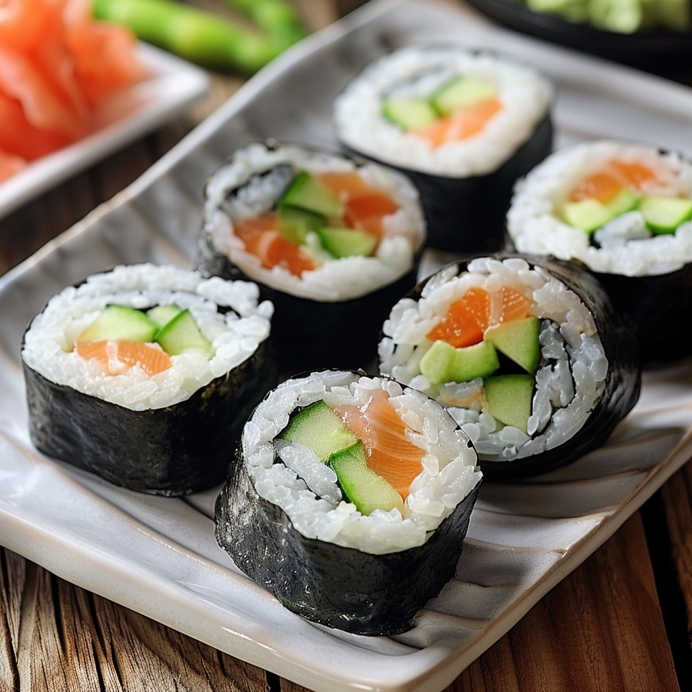

Garden Delight Sushi Roll

Ingredients
Sushi Rice
- 1 cup sushi rice
- 1¼ cups water
- 2 tablespoons rice vinegar
- 1 tablespoon sugar
- ½ teaspoon salt
Filling
- 2 medium-sized carrots, julienned
- 1 cucumber, julienned
- 1 avocado, sliced
- 4-5 radishes, thinly sliced
- ½ red bell pepper, julienned
- Fresh spinach leaves or microgreens
Protein
- 4 oz. smoked salmon or cooked shrimp (optional)
- OR Tofu strips (for a vegetarian option)
Wrapping and Topping
- 4 nori sheets
- Sesame seeds for garnish
- Soy sauce, wasabi, and pickled ginger for serving
Special Sauce
- 2 tablespoons mayonnaise
- 1 tablespoon sriracha sauce
- 1 teaspoon soy sauce
- 1 teaspoon lemon juice
Instructions
-
Prepare the sushi rice by rinsing, cooking, and seasoning with
vinegar mixture. Spread on a plate to cool.
- Julienne and slice the filling ingredients. Set aside.
-
Combine the ingredients for the special sauce in a bowl. Adjust to
taste.
-
Assemble the sushi rolls by spreading rice on a nori sheet, adding
fillings, and rolling tightly with a bamboo mat.
-
Cut the rolls into pieces, garnish with sesame seeds, and serve with
soy sauce, wasabi, and pickled ginger.